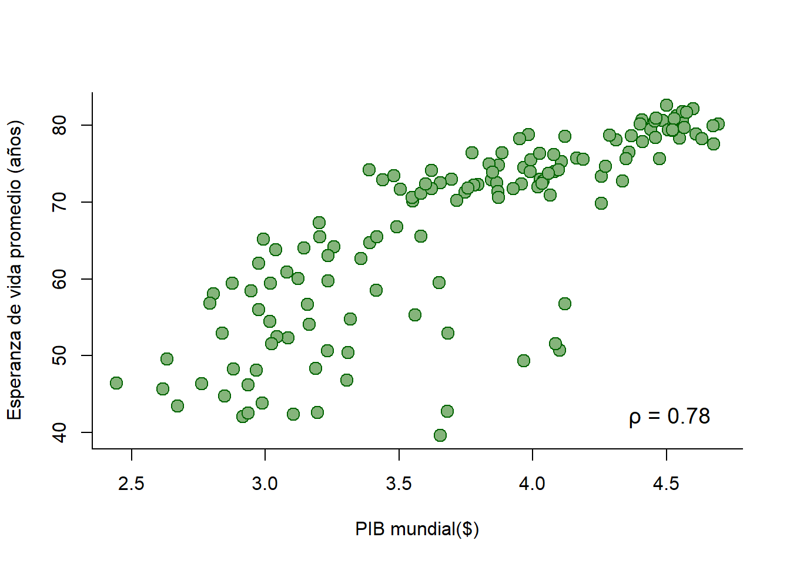
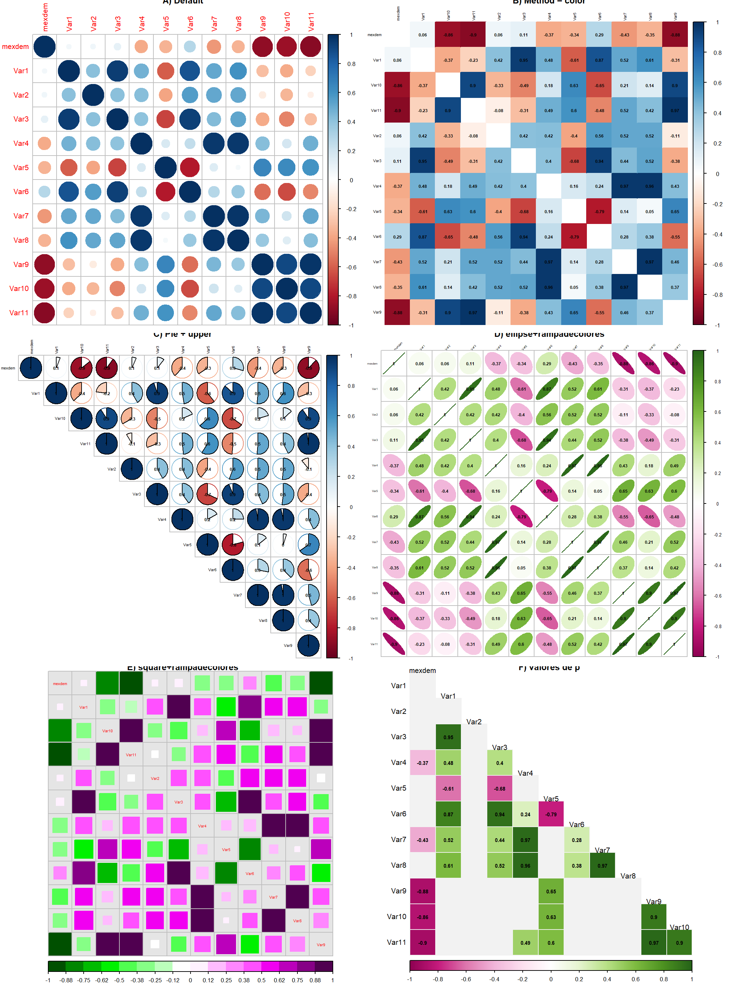

En esta Unidad 7.3 aprenderemos acerca de la prueba de correlación de Pearson. Esta es una prueba que se usa con datos continuos en la cual se calcula el grado de covariación entre variables relacionadas linealmente. Esta prueba nos dará un coeficiente de correlación, el cual nos indicará qué tanta correlación existe entre dos variables. La correlación puede ser positiva o negativa y su valor máximo es de 1 o -1, respectivamente.
En este caso trtaremos de ver si existen una correlación entre el PIB y la esperanza de vida mundial.
La prueba de correlación nos arrojará un coeficiente de correlación (r) y un valor de p, si el valor de \(p < 0.05\) nos indica que la prueba es estadísticamente significativa. En cuanto al coeficiente se suele marcar un umbral del 75% para considerar asociación entre variables.
#Paletas de color#Rampa de colores
library(paletteer)
library(colorBlindness)
pal1 <- paletteer_d("colorBlindness::Green2Magenta16Steps")
pal2 <- paletteer_c("ggthemes::Gold-Purple Diverging", 30)
#Seleccionamos los datos
library(gapminder)
gapm <- gapminder
gapm2007 <- gapm[gapm$year == "2007", ]
# Realizamos la prueba de correlación
cor.test(gapm$gdpPercap, gapm$lifeExp)##
## Pearson's product-moment correlation
##
## data: gapm$gdpPercap and gapm$lifeExp
## t = 29.658, df = 1702, p-value < 2.2e-16
## alternative hypothesis: true correlation is not equal to 0
## 95 percent confidence interval:
## 0.5515065 0.6141690
## sample estimates:
## cor
## 0.5837062La prueba es significativa con un coeficiente de r = 0.61
# Graficamos las variables
plot(log10(gapm2007$gdpPercap), gapm2007$lifeExp,
xlab = "PIB mundial($)",
ylab = "Esperanza de vida promedio (años)",
pch = 21, cex = 1.5,
bg = "#85B47B", col = "darkgreen",
bty = "L")+ # Gráfico sin márgenes superior y derecho)
text( x = 4.5, y = 42, #Posición
label = " ρ = 0.78",
cex = 1.2
)
## integer(0)No obstante,s iempre debemos verificar antes la normalidad de nuestros datos:
shapiro.test(gapm2007$gdpPercap)##
## Shapiro-Wilk normality test
##
## data: gapm2007$gdpPercap
## W = 0.80644, p-value = 2.039e-12shapiro.test(gapm2007$lifeExp)##
## Shapiro-Wilk normality test
##
## data: gapm2007$lifeExp
## W = 0.89467, p-value = 1.357e-08Nuestros datos no siguen una distribución normal, por lo que usaremos la prueba no paramétrica de Spearman:
cor.test(gapm$gdpPercap, gapm$lifeExp,
method = "spearman")## Warning in cor.test.default(gapm$gdpPercap, gapm$lifeExp, method = "spearman"):
## Cannot compute exact p-value with ties##
## Spearman's rank correlation rho
##
## data: gapm$gdpPercap and gapm$lifeExp
## S = 143096490, p-value < 2.2e-16
## alternative hypothesis: true rho is not equal to 0
## sample estimates:
## rho
## 0.8264712La prueba es significativa con un coeficiente de rho = 0.82.
A veces es necesario evaluar la correlación entre una o más variables. Para ello podemos generar una matriz de correlación y verla visualemente en R (correlograma). Para ello usamos las siguientes librerías:
#Una vez instaladas, cargar las librerias
library(ggplot2)
library(corrplot)## corrplot 0.92 loadedlibrary(mvnormtest)Las variables ambientales se recabaron de WorldClim la cual es una base de datos climáticos históricos a nivel mundial. Además, de la altitud registrada en un Modelo de Elevación Digital (DEM) hecho por INEGI (mexdem). A partir de esta matriz de correlación podemos elegir las variables óptimas para contruir nuestro modelo de distribución de la especie.
En el caso de que tengamos más de dos variables podemos usar la librería mvnormtest para calcular la normalidad de múltiples datos. Los datos deben ser de clase matrix
#Seleccionamos los datos
LBrachyVar <- read.csv("../data/LophornisBrachylophusVariables.csv",
header = T)
#Aplicar la prueba de normalidad de Shapiro-Wilk
#es necesario transponer (t) los datos
mshapiro.test(t(LBrachyVar))##
## Shapiro-Wilk normality test
##
## data: Z
## W = 0.37401, p-value = 3.964e-07Como los datos no cunmplen el supuesto de normalidad usaremos la prueba de Spearman.
par(mfrow = c(3,2))
#Genera el gráfico de correlación
mt.cor <- cor(LBrachyVar, method="spearman")
# A) Gráfico por default
corrplot(mt.cor,
main = "A) Default")
# B) Gráfico por método = color
corrplot(mt.cor, method = 'color', #Colorea los cuadros
order = 'alphabet',#orden alfabético
tl.cex = 0.5, tl.col = "black", #Tamaño y color de las etiquetas
number.cex=0.55, addCoef.col = 'black', # Añadir coeficiente de correlación
diag = F,
main = "B) Method = color"
)
# C) Gráfico por método = pie y upper
corrplot(mt.cor, method = 'pie', #Colorea las gráficas de pie
type = "upper", # Muestra solo la región de arriba
order = 'alphabet',#orden alfabético
tl.cex = 0.5, tl.col = "black", #Tamaño y color de las etiquetas
cl.cex=0.7, #Tamaño de la simbología
addCoef.col = 'black', # Añadir coeficiente de correlación
number.digits = 1,
number.cex=0.55,
main = "C) Pie + upper"
)
# D) Otra forma del grafico: ellipse
corrplot(mt.cor, method="ellipse",
tl.cex=0.4, tl.col = "black",
tl.srt = 45,
cl.cex=0.6,
col = COL2('PiYG'),
addCoef.col = 'black',
number.cex=0.55,
main = "D) ellipse+rampadecolores"
)
# E) Leyenda inferior, diagonal con nombres
corrplot(mt.cor, order = "alphabet",
method = "square",
cl.pos = 'b', # Leyenda en bottom
col = pal1,
diag = FALSE,
tl.cex = 0.5,
tl.pos = "d", #Nombre de variables en la diagonal
bg = "gray90", #Color de fondo
main = "E) square+rampadecolores"
)
# F) Incorporando el valor de p
pvalueCorr <- cor.mtest(LBrachyVar, conf.level = 0.95)
corrplot(mt.cor,
method = "color",
type = "lower",
p.mat = pvalueCorr$p,
sig.level = 0.05,
insig = "blank",
diag = FALSE,
addCoef.col = 'black', # Añadir coeficiente de correlación
number.digits = 2, # Num. digitos del coef
number.cex = 0.7, #Tamaño del coef
tl.col = "black",
tl.srt = 0, # Ángulo de las variables
cl.pos = 'b', # Leyenda en bottom
col = COL2('PiYG'), #Nombre de variables en la diagonal
bg = "gray95", #Color de fondo
addgrid.col = 'gray95',#Color de líneas
main = "F) valores de p"
)
De esta forma podemos generar gráficos con calidad para colocar en artículos y que nos permiten avanzar en nuestra investigación. Gracias a este correlograma podemos contruir un modelo para destinar zonas prioritarias de conservación para la coqueta de Guerrero.
Hemos terminado esta lección. Le agradezco su participación y espero que las herramientas vistas en este curso les sean de gran utilidad en su vida profesional y académica.